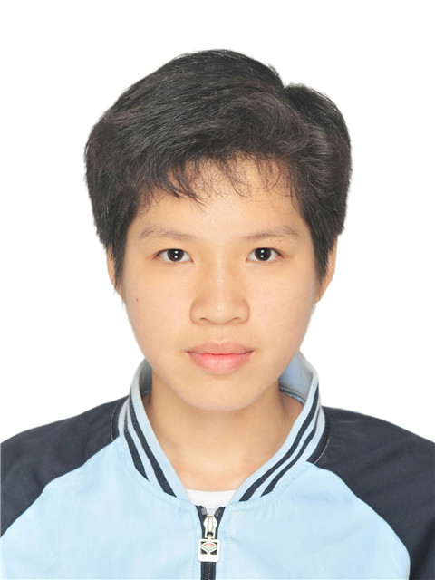

|
Minsi Lu (卢敏思)
|
 |
Advanced Undergraduate,
Tsinghua University,
Room 329A, Building 4, Zijing Apartment,
No. 30 Shuangqing Road,
Haidian District,
Beijing, China
E-mail: minsilu0330@gmail.com
|
About me
I am a senior student at Tsinghua University, Beijing, where I major in pharmaceutical science and minor in software engineering.
My research interests mainly focus on bioinformatics/computational biology.
Also, I have practiced in the laboratory of genomics/pharmacy at Peking University/Tsinghua University for a period of time.
Research
My research interests include:
Artificial Intelligence-based Drug Discovery High Throughput Omics Data Processing And Analysis Methods Single-cell Genomics Protein Structure Prediction
Research Experiences
High-throughput genome-wide functional screening based on CRISPR, 07/2021 - 09/2021
Functional screening of TNFα-induced cell death genes Designed sgRNA sequence, and constructed sgRNA plasmids for gene screening Constructed GoldenGate point mutation on plasmids Carried out cell culture, virus extraction and titer determination Worked based on Huazheng Ma
Research on Her2 and CXCR4 bispecific antibodies, 10/2020 - 02/2021
Screened the strain and DNA sequencing Determined the antibody Kd value of the experiment Transformation and plasmid transfection experiments Worked based on Tiantian Li
Projects
Multiomics Integration via Graph Learning, 09/2022 - 01/2023[details][code]
Focused on the latent space or aligning space method, where single-cell data of different omics were embedded into the same latent space Integration of scRNA-seq data and scATAC-seq data through graph learning To simulate real chromatin contact probability, we decayed the weight of edges according to the distance of the ATAC peak from the TSS We used a set of independent aggregators to combine the messages in each GCN layer (Principal Neighbor Aggregation) Worked with Wenda Chu, Botian Wang, Sihang Zeng, Shiyu Zhao. Based on GLUE.
PPI Network Guided Driver Target Discovery, 09/2022 - 01/2023[details][code]
Focused on the problem of driver target discovery using single-cell RNA-seq data. It is a fundamental task for drug design and pathway discovery The protein-protein interaction (PPI) data were leveraged in our framework to model the relationships between genes, which proved to be helpful for the discovery of potential target
On a single-cell glioma dataset, we achieved better cell clustering performance and driver target discovery performance than sc-ETM Biological case studies on our discovered targets also showed the effectiveness of our proposed framework Worked with Wenda Chu, Botian Wang, Sihang Zeng, Shiyu Zhao. Based on sc-ETM.
Weather Forecasting Based on LSTM/ARIMA Model, 08/2022 - 09/2022[details][code]
We used two models, ARIMA and LSTM, used weather data to train the two models and made a weather forecast system The results showed that the two models after training both have good fitting effect LSTM prediction effect is better than ARIMA Worked with Cheng Peng, Dejin Kong, Hanli Wang, Qi Tian
New ADC drug design strategies based on metabolic differences of glutamine, 02/2021 - 06/2021[details]
JHU-083 was selected as a candidate conjugate drug, and an antibody conjugate drug targeting PD-L1 was designed The screening method of antibody was designed: the phage antibody library was constructed by electric transformation method, and the required antibodies were obtained by phage display method Several experiments were designed to verify the antibody: Kd value, EC50, Antibody T cell activation level detection, Phagocytic effect of antibody macrophages was determined Worked with Yinan Shi, Mengxia Han, Kaixin Wang
Study on Synthesis and Pharmacological Properties of Gemcitabine, 09/2021 - 06/2022[details]
In this project, we prepared gemcitabine hydrochloride starting from 2-deoxy-2,2-difluoro-D-erythro-pentofuranose-1-one-3,5-dibenzoate In pharmacology study, we verified the inhibitory effect, proliferation effect and migration effect of gemcitabine on pancreatic cancer cell line (BxPC-3) and acute promyelocytic leukemia cells (NB-4) In pharmacokinetic study, we compared the pharmacokinetic parameters and plasma concentration-drug time curves of various administration methods to explore the first-pass effect of gemcitabine Worked with Yinan Shi, Mengxia Han, Qing Liu
I/O Scheduling to xv6, 09/2021 - 01/2022[code]
Added Completely Fair Queuing algorithm, Shortest Seek Time First algorithm and Deadline algorithm Tested and compared the performance of NOOP and above algorithms Worked with Jingxi Zhu, Sizhong Qin, Yurui Hong
King of Fighters developed based on Windows application programming, 10/2022 - 01/2023[code]
King of Fighters was an fighting game developed based on Windows application programming The game reproduced some of the characters and scenes of "The King of Fighters 97" Players can choose different protagonists, opponents, scenes, and difficulties. Players can also choose different AI opponents.
Chat software developed by python, 09/2022 - 12/2022[code]
Can realize private chat and group chat function Communication between client and server through TCP/IP protocol Can register, log in users; add and delete friends, group chat
Hospital triage information management system, 09/2022 - 11/2022[code]
Consisted of five tables and their interrelationships It can browse consultation room information, display doctor outpatient schedule, call patients by number, display registration information on a large screen, submit and query patient evaluation, and manage personnel changes in internal medicine
Education
B.S., Pharmacy, Tsinghua University, 09/2019 - Present
Main Courses: Bioinformatics and Systems Biology, Fundamentals of Biostatistics, Principles of Pharmacology, Drug Design, Medicinal Chemistry, Biochemistry, Molecular Biology
B.S., minor in Software Engineering, Tsinghua University, 09/2021 - Present
Main Courses: Programming Fundamentals(C/C++), Advanced Python Programming, Computational Biology, Modern Operating System, Data Structure, Discrete Mathematics
Competitions and awards
The 1st prize of "Novozymes Cup" Life Science Culture Festival of Capital Schools, 2021 The 3rd prize of "Challenge Cup" Student Academic Science and Technology Works Competition, 2021 The 3rd prize of winter vacation social practice for Students in Tsinghua University, 2021 Scholarship for Learning Progress in Tsinghua University, 2021
Skills
Programming: Python, C, C++, SQL, XHTML, Git, LATEX, MarkDown Software Tools: Gauss, SnapGene Experimental skills: Molecular Biology, Pharmacology and Toxicology, Pharmaceutics, Biochemistry, Medicinal Chemistry, Inorganic and Analytical Chemistry, Organic Chemistry, Physical Chemistry
A brief cv.
|
{kind=link}